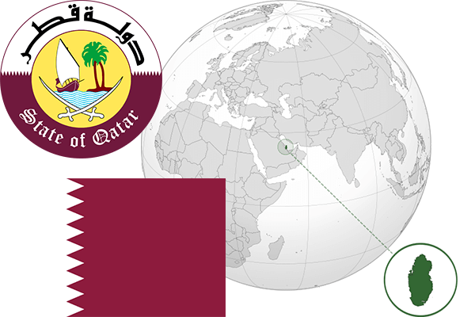

To`liq nomi: Qatar Davlati
Region: Janubiy Gʻarbiy Osiyo
Qonunchilik shakli: Mutlaq monarxiya
Mustaqillik kuni: 3-sentabr 1971 (Birlashgan Qirollikdan)
Poytaxt: Doha
Maydoni: 11,437 km²
Chegaradosh davlatlari: Bahrayn, BAA, Saudiya Arabistoni.
Aholisi: 2 641 669 (2017-yil)
Aholi zichligi: 146,7 /км²
Aholining o`rtacha yoshi: 78,78 yil
Rasmiy tili: Arab tili
Dini: Islom
Pul birligi: Qatar riali
Telefon prefiksi: +974
Internet domen: .qa
Xalqaro tashkilotlarga a`zoligi: BMT
Dengiz va okeanlarga chiqishi: Fors ko’rfazi
YIM: Butun: $359 163 mlrd.(2017-yil) Jon boshiga: $ 129,360
Yirik shaharlari: Doha, Al-Vaqra, Al-Haur